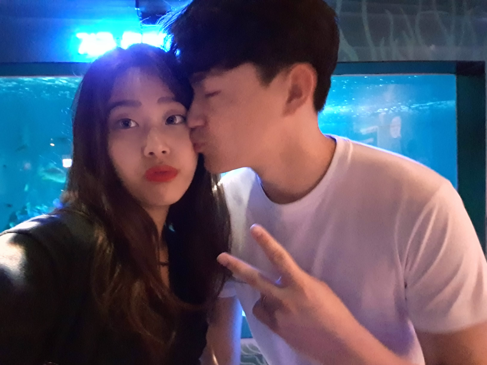
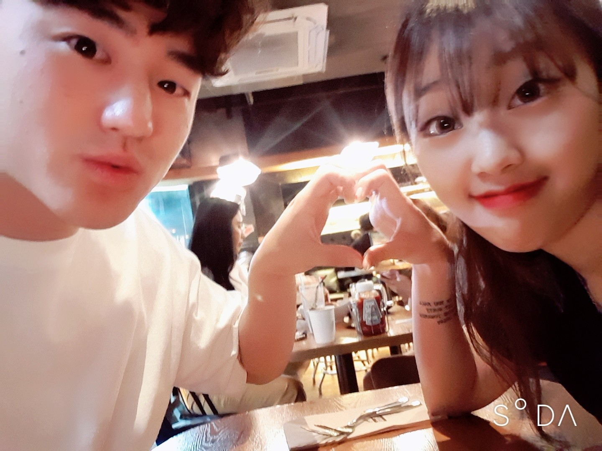
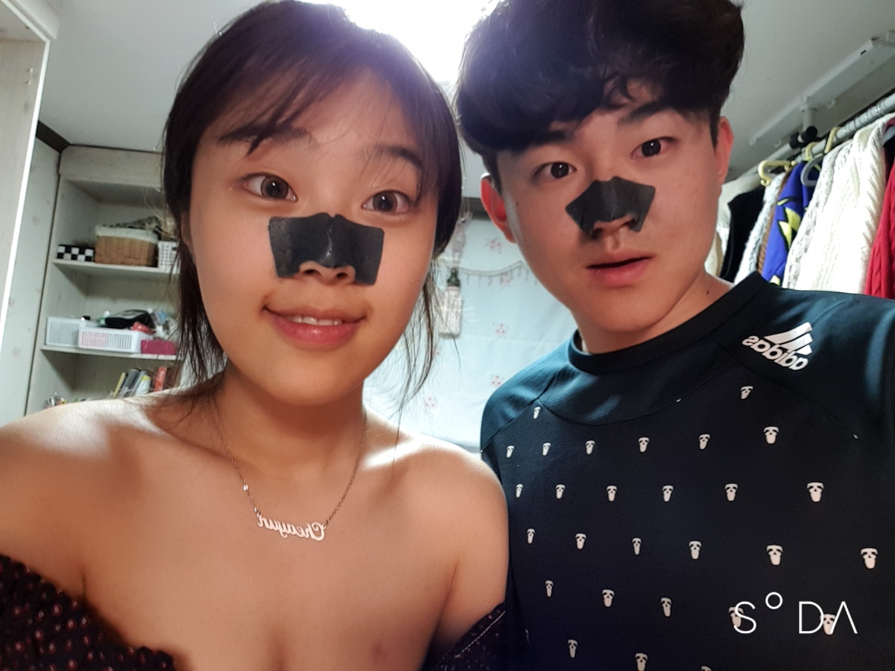
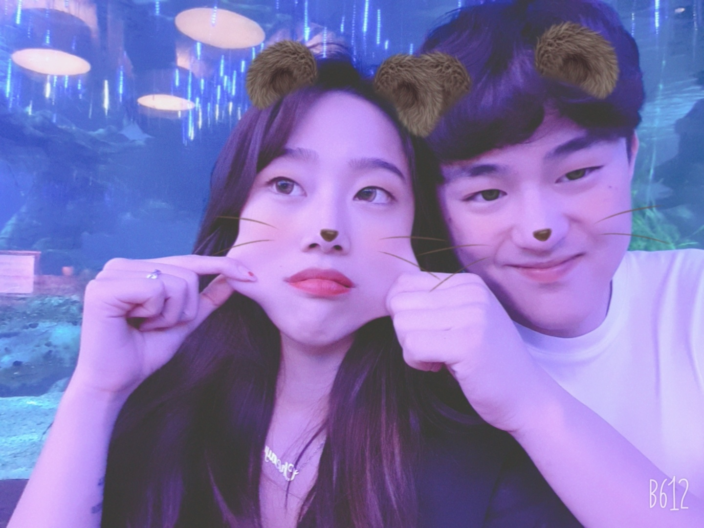

여행
1.동기 및 목적
2.장소
3.사랑해
미안해
채윤아 내가 미안하다. 말 쉽게 하는 거 아닌데
그 때 그 감정에서는 그 말을 왜 못참는지 정말 내가 밉다.
항상 너를 생각하면 웃음이 나곤 했는데 오늘은 눈물만 나네
채윤아 나 있자나 진짜 너 좋아하거든 그래서 아까 정말로
너가 내 옆에 있으면 헹복하지 않나 싶어서 나말고 더 좋은
남자 만나면 나 잊고 행복하겠지 하는건 개소리야 너는 나 말고
그 어떤 남자도 만나면 안되고 아무리 내가 못해줘도 끝까지 나
만나야되 너가 믿는 것처럼 나는 계속 노력해서 바뀔꺼고 조만간
최고의 남자가 될꺼란 말이야 그러니까 지금 떠나면 손해야
진짜 나 너 많이 좋아해 잘할께 한번만 더 지켜 봐주라 나 너없으면
숨도 못쉴꺼 같아 채윤아 정말 사랑하고 오늘 너무 상처 많이 줘서 너무 미안해
진짜 사랑한다.
채윤아 나 내가 멀 잘못했는지 알고 있어 너는 몇번이고 상처 받아도 그래도 한번 더 기회주려고 했는데
내가 너를 밀어내는 말을 했지. 정말 미안하다. 나는 너가 내 옆에 있어주면 좋겠어. 힘들겠지만 부탁해

